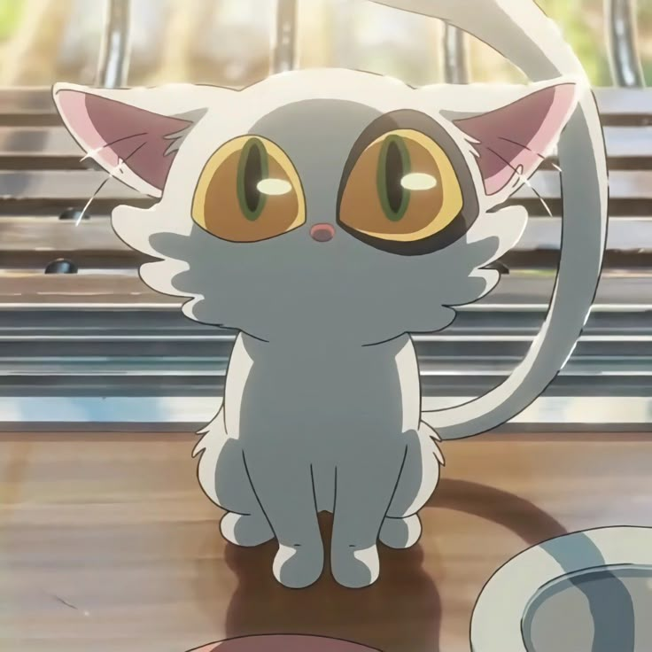
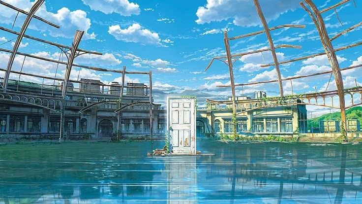
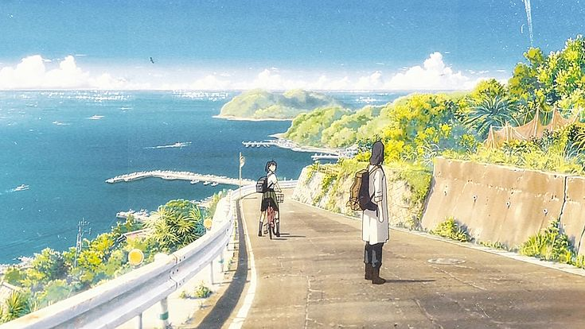
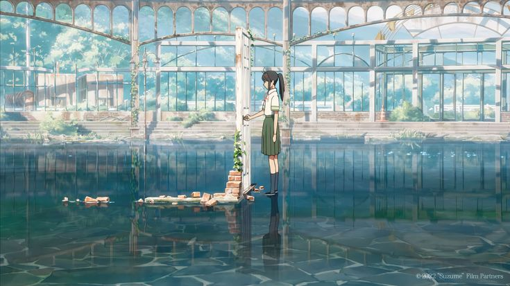
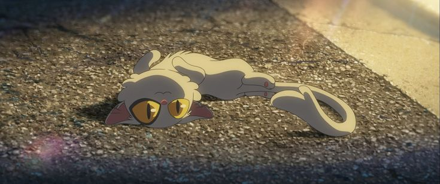

✦
Anime Cinema Universe
✦

Suzume no Tojimari
🎬 Sutradara: Makoto Shinkai
📅 Tahun: 2022
⏱️ Durasi: 122 menit
🎵 Musik: RADWIMPS & Kazuma Jinnouchi
🏆 Rating: ★★★★☆ 7.8/10
💰 Box Office: ¥14.78 miliar
🎞️ Studio: CoMix Wave Films
📍 Lokasi: Berbagai kota di Jepang
Suzume no Tojimari mengisahkan perjalanan Suzume Iwato, seorang gadis berusia 17 tahun yang tinggal
di sebuah kota tenang di Kyushu. Suatu hari, dia bertemu dengan seorang pemuda misterius bernama Souta
yang sedang mencari "pintu".
Tanpa sengaja, Suzume membuka sebuah pintu tua yang mengarah ke "Dunia Lain", tempat yang menjadi
sumber bencana gempa bumi di Jepang. Dari pintu itu keluar "cacing" yang dapat menyebabkan gempa dahsyat.
Souta ternyata adalah "Closer" yang bertugas menutup pintu-pintu tersebut.
Namun, sebuah kutukan mengubah Souta menjadi kursi tua! Suzume pun memutuskan untuk membantu Souta
(yang sekarang berbentuk kursi) dalam perjalanan menutup berbagai pintu di seluruh Jepang.
Perjalanan ini membawa mereka melintasi berbagai lokasi bersejarah yang pernah dilanda gempa bumi.
Film ini tidak hanya petualangan fantasi, tetapi juga cerita tentang penyembuhan trauma, menghadapi
kehilangan, dan menemukan makna kehidupan setelah bencana.
"Aku tidak takut dengan apa yang ada di depan, tapi dengan apa yang kutinggalkan."
- Suzume Iwato, Suzume no Tojimari

(岩戸 鈴芽)
17 tahun
Siswi SMA dari kota kecil di Kyushu yang kehilangan ibunya dalam gempa besar 12 tahun lalu. Tinggal bersama bibinya, Tamaki. Hidupnya berubah total ketika secara tidak sengaja membuka "Pintu Bencana" yang mengeluarkan "cacing" penyebab gempa.

(宗像 草太)
22 tahun
Mahasiswa yang bekerja paruh waktu sebagai "Closer". Tenang, serius, dan bertanggung jawab. Nasibnya berubah drastis ketika dikutuk menjadi kursi tiga kaki tua.

(ダイジン)
?
Makhluk misterius berbentuk kucing putih. Awalnya adalah patung kucing di kuil yang hidup kembali. Sebenarnya adalah "Keystone" - penjaga utama yang menahan kekuatan bencana dari Dunia Lain.



